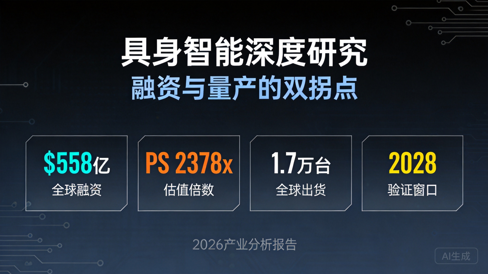

2026年被产业界定义为具身智能的"量产元年"。这个数字背后隐藏着一个值得深思的产业悖论：当资本市场对Physical AI的热情达到历史峰值时，技术落地与商业化之间的鸿沟仍未完全弥合。
让我们先看一组对比数据：2026年上半年，全球Physical AI领域融资规模达到558亿美元（约合人民币4600亿元），仅Figure AI一家的估值就达到390亿美元。然而高盛对2035年全球具身智能市场的预测仅为380亿美元——这意味着一家公司的估值已经超过了整个行业10年后的市场规模。
这个数学游戏揭示的核心问题是：当前资本市场的估值逻辑，究竟是基于对技术奇点的信仰，还是对产业规律的理性判断？
本文将从三个维度展开深度分析：第一，融资数据的结构性特征与中美差异；第二，VLA技术路线的演进逻辑与工程化挑战；第三，BOM成本拆解与量产经济性的临界点判断。最终回答一个核心问题：具身智能的真正验证窗口何时到来？
2026年上半年，全球Physical AI领域融资呈现高度集中特征。前五大融资项目占总融资额的67%，头部效应显著。
| 公司 | 融资金额 | 估值 | 技术路线 | PS倍数 |
|---|---|---|---|---|
| Figure AI | Series C | $39B | VLA + 世界模型 | 待商业化 |
| 智平方 | 近50亿元 | >200亿元 | NeuroVLA类脑架构 | 待商业化 |
| 光轮智能 | 未披露 | >$20亿 | 端到端VLA | Q1订单¥5.5亿 |
| 宇树科技 | 已上市 | 科创板 | 传统控制 + VLA | 17亿营收 |
中美两国在具身智能领域的资本投入呈现截然不同的特征：
| 维度 | 中国 | 美国 |
|---|---|---|
| H1融资规模 | ¥4600亿+ | $558亿（约¥4000亿） |
| 资本结构 | 产业资本+政府引导基金为主 | VC/PE为主 |
| 投资偏好 | 量产能力、供应链整合 | 技术突破、算法创新 |
| 估值逻辑 | PS倍数 + 订单可见性 | TAM（总可寻址市场）+ 技术壁垒 |
这种差异直接导致了技术路线的分化：中国企业更倾向于选择工程化程度高、量产确定性强的技术路线；美国企业则更愿意押注前沿技术，承担更高的技术风险。
VLA（Vision-Language-Action）架构的本质是将视觉感知、语言理解和动作执行统一到一个端到端的神经网络中。其核心优势在于：
但从工程化角度看，VLA面临三个核心挑战：
| 挑战 | 技术问题 | 工程化影响 |
|---|---|---|
| 实时性 | 推理延迟>100ms | 无法满足高速运动控制需求 |
| 样本效率 | 需要海量示范数据 | 数据采集成本高昂 |
| 长时序任务 | 每步成功率95%，10步串联后仅60% | 复杂任务可靠性不足 |
当前行业正在形成三条主要技术路线：
| 路线 | 代表企业 | 核心架构 | 优势 | 劣势 |
|---|---|---|---|---|
| 纯VLA | 光轮智能 | 端到端视觉-语言-动作 | 语义泛化强 | 物理理解弱 |
| VLA + 世界模型 | Figure AI、小鹏 | VLA + 物理仿真层 | 兼顾语义与物理 | 系统复杂度高 |
| 类脑VLA | 智平方 | NeuroVLA皮层-小脑-脊髓 | 仿生架构、可解释性强 | 工程化难度大 |
2026年4月，地瓜机器人发布旭日S600芯片，单芯片算力达到560 TOPS，已与时序科技、加速科技等20+头部企业达成深度合作。这一算力水平首次满足了VLA模型的端侧实时推理需求。
人形机器人的BOM（Bill of Materials）成本结构呈现出高度集中的特征：
| 模块 | 成本占比 | 核心组件 | 国产化率 |
|---|---|---|---|
| 关节执行系统 | 40-50% | 减速器、伺服电机、驱动器、编码器 | 60%（减速器） |
| 感知系统 | 15-20% | 视觉传感器、力传感器、IMU | 70% |
| 计算与控制 | 10-15% | 主控芯片、AI加速卡 | 40% |
| 灵巧手 | 10-15% | 微型电机、触觉传感器 | 50% |
| 电池与电源 | 5-10% | 锂电池、BMS | 80% |
| 结构件 | 5-10% | 机身框架、外壳 | 90% |
关节执行系统占BOM成本40-50%，是决定整机经济性的核心变量。以一台典型的人形机器人为例（42个自由度），关节系统的成本拆解如下：
| 组件 | 单价（2024） | 单价（2026） | 降幅 | 数量 | 总成本占比 |
|---|---|---|---|---|---|
| 谐波减速器 | ¥6,000 | ¥3,500 | 42% | 14个 | 12% |
| 伺服电机 | ¥3,000 | ¥2,000 | 33% | 14个 | 7% |
| 力矩传感器 | ¥25,000 | ¥8,000 | 68% | 14个 | 28% |
| 编码器 | ¥800 | ¥500 | 38% | 28个 | 4% |
| 驱动器 | ¥2,000 | ¥1,200 | 40% | 14个 | 4% |
根据我们的测算，人形机器人实现商业化应用的成本临界点为：
当前宇树科技已率先突破工业场景的成本临界点。根据其招股书数据，2025年出货量5500台，营收16.99亿元，毛利率60.13%，已实现规模化盈利。
| 企业 | 2025年出货 | 2026年目标 | 技术路线 | 核心客户 |
|---|---|---|---|---|
| 宇树科技 | 5,500台 | 15,000台+ | 传统控制 + VLA | 工业、科研 |
| 智元机器人 | 5,200台 | 10,000台+ | VLA + 世界模型 | 物流、制造 |
| 优必选 | 1,000台 | 5,000台 | 传统控制 | 服务、教育 |
| 光轮智能 | 初创期 | 1,000台 | 端到端VLA | 工业试点 |
| 中国合计 | ~14,400台 | 35,000台+ | - | - |
| 全球合计 | ~17,000台 | 50,000台+ | - | - |
值得关注的是，智元机器人在2026年3月实现了第1万台通用具身机器人下线，从第1000台到第10000台仅用时三个月，展现了极强的量产爬坡能力。
| 维度 | 中国 | 美国 | 差距分析 |
|---|---|---|---|
| 2025年出货量 | ~14,400台（84.7%） | ~2,600台（15.3%） | 中国领先5.5倍 |
| 2026年目标 | 35,000台+ | 15,000台 | 中国领先2.3倍 |
| 量产成本 | ¥10-15万 | $5-8万（¥36-58万） | 中国成本低60-75% |
| 供应链完整度 | 90%国产化 | 60%依赖进口 | 中国供应链优势显著 |
| 核心技术 | 工程化能力强 | 算法领先 | 美国在VLA等前沿技术领先1-2年 |
截至2026年7月，A股人形机器人概念板块总市值达到11.89万亿元（约$1.65万亿），而2025年全球实际出货量仅为1.7万台。
这种极端估值背后，隐含了三层市场预期：
| 预期层级 | 假设内容 | 实现概率 | 时间窗口 |
|---|---|---|---|
| 第一层：量产扩张 | 2030年全球出货50万台 | 70% | 2028-2030 |
| 第二层：单价下降 | BOM成本降至¥5万以下 | 50% | 2029-2031 |
| 第三层：场景突破 | 家庭场景大规模应用 | 20% | 2032-2035 |
判断具身智能产业是否进入成熟期，需要关注以下四个核心指标的验证情况：
| 指标 | 2026年现状 | 2028-2029年目标 | 验证意义 |
|---|---|---|---|
| VLA实时性 | 推理延迟>100ms | <50ms | 决定能否用于高速运动控制 |
| 长时序任务成功率 | 10步串联60% | >85% | 决定复杂任务的可靠性 |
| 灵巧手寿命 | 1-3个月 | >12个月 | 决定维护成本和经济性 |
| 续航能力 | 2-4小时 | >8小时 | 决定是否满足全天候工作需求 |
2028-2029年将是具身智能产业的"验证窗口期"，需要完成以下关键验证：
| 情景 | 概率 | 核心假设 | 市场影响 |
|---|---|---|---|
| 乐观情景 | 25% | VLA技术突破，2029年出货30万台，家庭场景启动 | 估值维持高位，板块继续上涨50% |
| 基准情景 | 55% | 技术渐进式改进，2029年出货15万台，工业场景为主 | 估值回调30-40%，回归理性 |
| 悲观情景 | 20% | 技术瓶颈难以突破，2029年出货<5万台 | 估值回调60%+，行业洗牌 |
回顾智能手机产业的发展历程，我们可以发现一个清晰的规律：
人形机器人产业正在重复这一路径：美国定义技术路线（VLA、大模型），中国负责量产落地。但不同的是，中国在供应链完整度和工程化能力上的优势更加显著。
| 维度 | 美国 | 中国 | 根源分析 |
|---|---|---|---|
| 技术路线 | VLA + 世界模型 | 工程化优先、渐进式创新 | 美国基础研究强，中国应用创新强 |
| 资本结构 | VC/PE主导，追求高风险高回报 | 产业资本+政府基金，追求确定性 | 资本市场成熟度差异 |
| 人才结构 | AI算法人才密集 | 工程化人才密集 | 教育体系和产业结构差异 |
| 供应链 | 依赖进口，成本高 | 完整自主，成本低 | 制造业基础差异 |
基于以上分析，我们对中美人形机器人产业的未来格局做出以下判断：
通过对融资数据、技术路线、BOM成本、量产进度的系统性分析，我们得出以下核心结论：
结论一：行业已进入"双拐点"阶段
融资拐点：2026H1全球融资558亿美元，中国4600亿元，资本密集度达到历史峰值。
量产拐点：2025年全球出货1.7万台，2026年预计5万台+，中国占84.7%，量产能力已初步验证。
结论二：估值存在显著泡沫
Figure AI估值390亿美元 > 高盛2035年市场预测380亿美元，存在估值倒挂。
A股板块11.89万亿市值 / 1.7万台出货 = 6.99亿/台，溢价2300-6990倍。
当前估值已price in未来5-8年增长的80%以上。
结论三：中国主导量产，美国主导技术
中国优势：供应链完整度90%、量产成本低60-75%、出货占比84.7%。
美国优势：VLA算法领先1-2年、基础研究能力强、资本结构更适合高风险创新。
结论四：关节执行系统是核心变量
占BOM成本40-50%，是决定整机经济性的关键。
2024-2026年成本下降35%，主要驱动因素：规模效应（28%）+ 国产化替代（35%）+ 技术迭代（15%）+ 其他（22%）。
结论五：2028-2029年是真正验证窗口
需要完成四个关键验证：VLA实时性<50ms、长时序任务成功率>85%、灵巧手寿命>12个月、续航>8小时。
如果验证通过，行业将进入加速成长期；如果验证失败，估值将面临显著回调。
本研究仍有以下问题值得进一步探讨：
第一，VLA算法的样本效率问题。当前VLA模型需要海量示范数据，如何通过自监督学习、模仿学习等技术提升样本效率，是降低数据采集成本的关键。
第二，多机协同与群体智能。单台机器人的能力有限，如何通过多机协同实现复杂任务，是未来的重要研究方向。
第三，人机协作的安全与伦理问题。人形机器人进入家庭场景后，如何确保人机交互的安全性，如何处理伦理问题（如隐私保护、责任归属），需要深入研究。
第四，商业模式的创新。当前以硬件销售为主，未来是否会出现RaaS（Robot-as-a-Service）、数据服务等新的商业模式，值得关注。